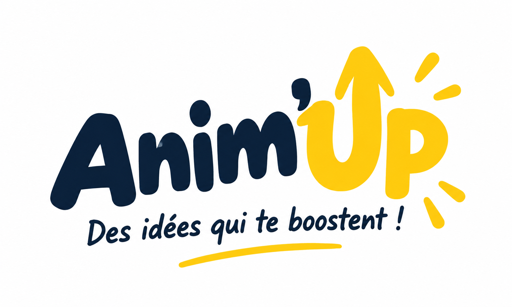

Politique de confidentialité
Dernière mise à jour : 17 novembre 2026. Voici quelles données Anim’Up utilise, pourquoi, et comment tu les contrôles.
Les données que nous utilisons
Compte : ton adresse e-mail et ton mot de passe (conservé sous forme protégée par notre prestataire d’authentification). Si tu te connectes avec Apple, Google ou Facebook, nous recevons l’identifiant de ce compte, ton e-mail et, selon ton choix, ton nom.
Profil : ton prénom, ton nom affiché et, si ton fournisseur de connexion en transmet une, l’adresse de ta photo.
Ton usage : les activités que tu mets en favoris, tes avis « J’ai aimé » ou « Pas trop », les plannings que tu composes, et pour les plannings thématiques, les semaines que tu crées avec leurs points par maison. Si tu prends Premium : la date de début et de fin de ton accès.
Tes propositions : les activités que tu nous envoies avec « Propose ton activité », et la photo si tu en joins une.
Sur ton appareil : ta session de connexion, ton choix de thème clair ou sombre, et un compteur d’ouvertures de l’application qui sert à te proposer de noter l’application.
Ce que nous ne faisons pas
Anim’Up n’affiche pas de publicité, n’utilise pas d’outil de suivi publicitaire ni de statistiques d’usage, ne vend pas tes données et ne les partage pas pour du marketing.
L’application est destinée aux adultes. Nous ne collectons aucune donnée sur les enfants que tu encadres : les plannings ne contiennent ni nom ni photo d’enfant.
Pourquoi nous les utilisons
Pour créer et sécuriser ton compte, afficher ton profil, conserver tes favoris et tes plannings, et faire fonctionner l’application. Ces traitements sont nécessaires pour te fournir le service que tu demandes.
Qui reçoit tes données
Supabase héberge la base de données et gère l’authentification. Les données sont stockées dans la région de Paris. Supabase est une société américaine : certains traitements peuvent donc impliquer un transfert hors de l’Union européenne, encadré par les garanties prévues par le règlement européen.
Apple, Google et Facebook interviennent uniquement si tu choisis de te connecter avec eux, selon leurs propres politiques.
Si tu prends Premium, Apple ou Google gère le paiement : nous ne voyons jamais ta carte bancaire. RevenueCat, notre prestataire de gestion des abonnements, reçoit l’identifiant de ton compte Anim’Up et l’historique de tes achats, pour savoir si ton accès Premium est actif. RevenueCat est une société américaine, avec les mêmes garanties de transfert.
Lorsque tu lances la vidéo d’un chant, YouTube (Google) peut recevoir des informations techniques, selon sa propre politique de confidentialité.
Si tu prends Premium sur le site animup.fr, Stripe traite ton paiement (carte bancaire, adresse e-mail, pays) selon sa propre politique de confidentialité, et RevenueCat reçoit l’identifiant de ton compte Anim’Up et l’historique de tes achats. Stripe garde les données de paiement aussi longtemps que la loi l’impose.
Sur le site animup.fr et la version web, Umami compte les visites sans cookie et sans te suivre d’un site à l’autre : pages vues, type d’appareil, pays et site d’où tu viens. Ces chiffres sont anonymes et servent seulement à savoir comment le site est utilisé.
Combien de temps nous les gardons
Tes données sont conservées tant que ton compte existe. Si tu supprimes ton compte, ton profil, tes favoris, tes avis, tes plannings et tes propositions sont supprimés avec lui. Pour faire effacer aussi la photo jointe à une proposition, écris-nous.
Tes droits
Tu peux demander l’accès à tes données, leur rectification, leur effacement, leur portabilité, ou t’opposer à leur utilisation. Tu modifies ton prénom et ton nom dans l’onglet Profil, et tu peux supprimer ton compte au même endroit.
Pour toute autre demande, écris-nous à l’adresse indiquée en bas de cette page. Si tu estimes que tes droits ne sont pas respectés, tu peux saisir la CNIL (cnil.fr).
Sécurité
Les échanges avec nos serveurs sont chiffrés. Ta session est conservée de façon sécurisée sur ton appareil lorsque celui-ci le permet.
Évolution de cette politique
Si cette politique change, la date de mise à jour en haut de cette page sera modifiée et, en cas de changement important, tu en seras informé dans l’application.
Éditeur et contact
Anim’Up est éditée par Ryan Et-Toumi, entrepreneur individuel.
Pour toute question ou demande liée à tes données ou à ces conditions : contact@animup.fr.